A primeira coisa que precisamos ter em mente para estudar esse tópico é que o corpo busca manter a homeostase (constância) de parâmetros como osmolaridade plasmática e volemia.
Veja que para isso, o volume e osmolaridade urinária vão variar, de acordo com a necessidade de manter os primeiros constantes.
De fato, a osmolaridade urinária pode variar numa ampla faixa, de 50 – 1200 mOsm/L.
Se o corpo precisa reter água, a osmolaridade urinária fica maior (mais concentrada).
Se ele precisa excretar água, a osmolaridade urinária fica menor (mais diluída).
Um protagonista desses mecanismos é o ADH – Hormônio Anti-Diurético.
Na porção distal do néfron (parte final do túbulo distal e ducto coletor), só haverá permeabilidade à água na presença desse hormônio.
Observe a imagem abaixo, ela representa uma situação de AUSÊNCIA de ADH.
Note que água é reabsorvida apenas no túbulo proximal e ramo descendente da alça de Henle.
Depois disso, solutos são ativamente reabsorvidos, deixando o fluído cada vez mais diluído (didaticamente, a cor vai ficando mais clara).
Quando o fluído termina de percorrer o ducto coletor, chegando nas papilas renais, a osmolaridade da urina é baixa (50mOsm/L).
Ela está diluída porque solutos foram sendo reabsorvidos, e a água não pôde seguir por osmose (estamos na ausência do ADH, e o epitélio é impermeável à água).
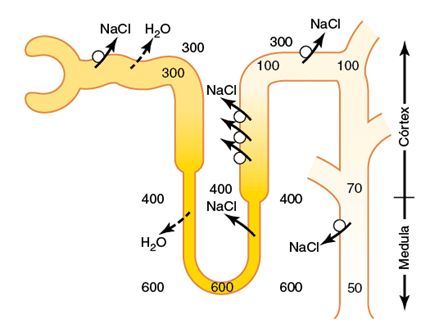
Nesse caso, os rins terão que fazer urina concentrada.
Mas como fazer para reabsorver somente água? Se até aqui vimos que para mobilizar água, o corpo mobiliza soluto (principalmente sódio). E a água segue por osmose?
Acontece que, além desses mecanismos, os rins têm a capacidade mobilizar água, independentemente de mobilizar soutos!
Mas como?? Afinal, a água nunca é bombeada… ela para se mover, precisa seguir algum soluto.
A evolução conseguiu essa façanha através da manutenção de um interstício hiperosmótico!
Assim, quando necessário produzir urina concentrada, basta a presença de ADH, para que o epitélio fique permeável, e a água deixe a via urinária, seguindo para esse interstício.
Como é formado o interstício hiperosmótico:
Multiplicador de contracorrente
A melhor maneira para compreender como desenvolvemos um interstício hiperosmótico, é seguir o passo a passo de como ele se forma.
Ou seja, partir de uma situação em que não havia diferença na osmolaridade, e como essa diferença foi se desenvolvendo.
Siga abaixo esse passo a passo.
ATENÇÃO: é importante que você compreenda cada figura, antes de partir para a seguinte.
Nessa etapa 1, pense que os rins estão se desenvolvendo… e ainda existe um equilíbrio osmótico entre o fluído dentro do nefron, e o interstício.
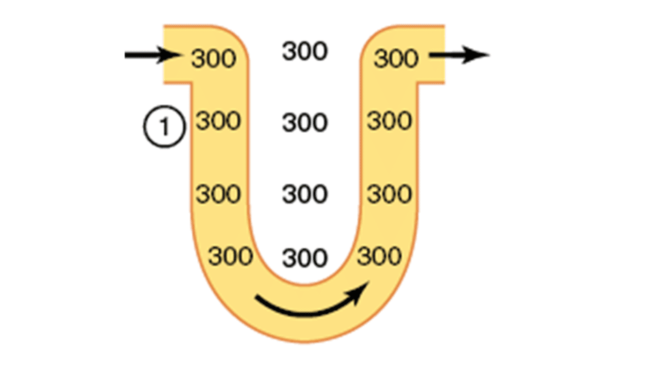
Mas acontece que no ramo ascendente espesso da alça, expressamos grande número de transportadores de solutos, deixando a situação como ilustrada abaixo na etapa 2:
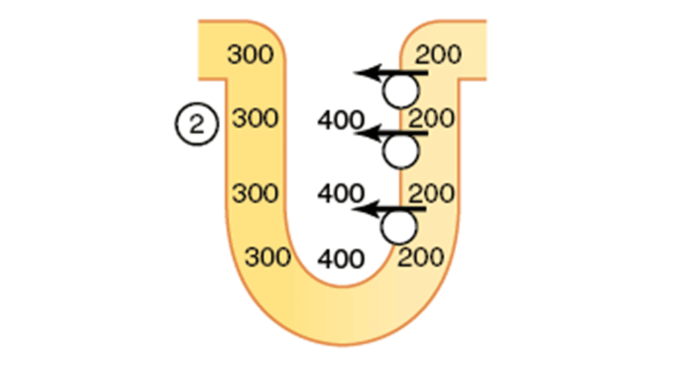
Uma vez que soluto está sendo ativamente transportado para o interstício, este fica mais concentrado.
Dentro do néfron, por outro lado, a parte que está perdendo os solutos fica mais diluído (observe isso na figura acima, antes de seguir adiante).
Essa situação não persiste por muito tempo, porque sendo o ramo descendente da alça permeável à água, ela prontamente se move por osmose, diluindo o interstício até que haja um equilíbrio osmótico.
Note que ao fazer isso, o fluído do ramo descendente perde água, tornando-se mais concentrado do que estava ante, de 300 para 400 mOsm/L (observe esse evento abaixo na etapa 3. Identifique tudo o que foi exposto, antes de seguir para o próximo):
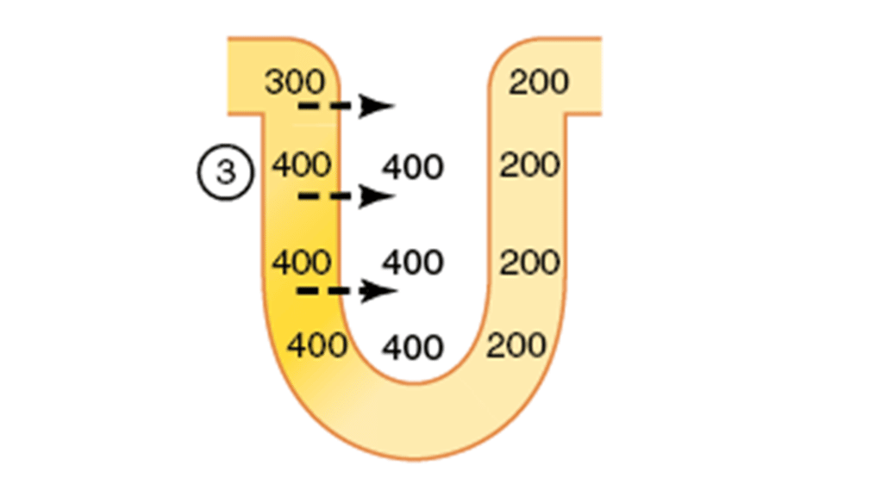
Mas essa situação também não persiste por muito tempo, uma vez que a filtração não para de acontecer, e fluído de concentração 300 está o tempo todo chegando do túbulo proximal.
Note abaixo (etapa 4) como o fluído que ficou 400 mOsm/L é empurrado para o ramo ascendente da alça:
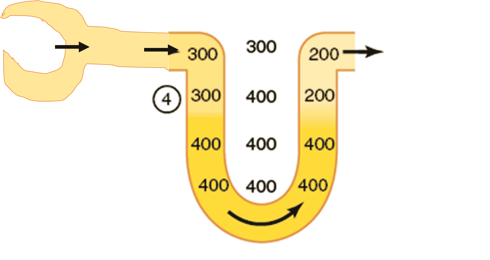
E vamos lembrar que o ramo espesso ascendente tem muitos transportadores de solutos, que prontamente transportam os solutos desse fluído que está chegando com 400 mOsm/L para o interstício.
Isso leva à diluição do fluído, e mais soluto sendo reabsorvido para o interstício:
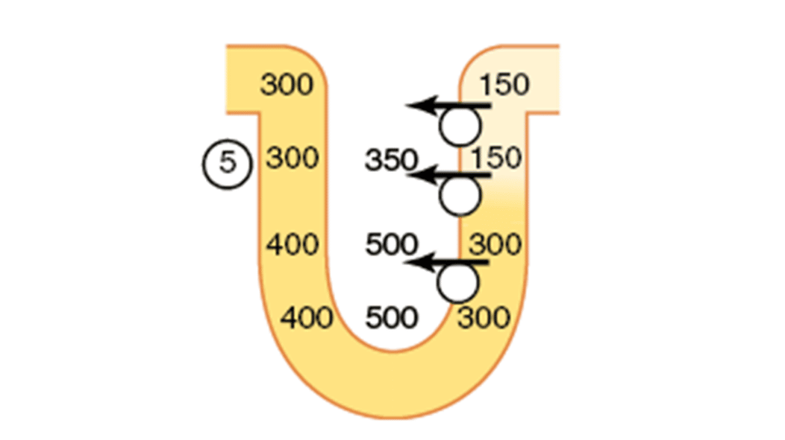
Perceba na imagem acima (etapa 5) que já começamos a criar um gradiente de concentração, onde quanto mais interno o interstício na medula renal, mais concentrado ele é.
Novamente, o interstício hiperosmótico atrai água do ramo descente da alça, até que haja equilíbrio osmótico entre esses compartimentos:
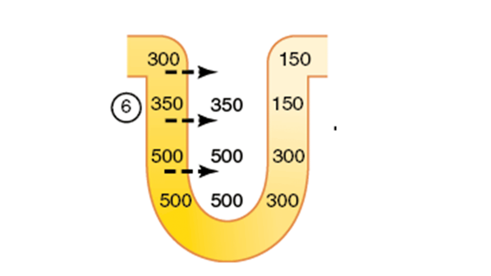
Não é de se espantar que o fluído do ramo descendente e o interstício fiquem em equilíbrio, uma vez que essa parte do néfron é muito permeável à água, e ela simplesmente vai por osmose para onde tem mais soluto.
Agora, imagine as etapas 4, 5 e 6 ocorrendo repetidamente:
Fluído vai chegando do túbulo proximal, empurrando o fluído cheio de soluto para o ramo ascendente, onde os transportadores vão reabsorvendo ativamente os solutos para o interstício.
Com o tempo, a situação final dos nossos rins é obtida: interstício mais concentrado quanto mais interno na medula ele estiver:
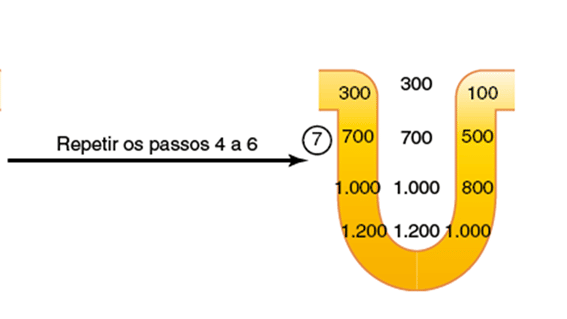
Agora, nas palavras do Guyton –Tratado de fisiologia médica, CAPÍTULO 29:
“Assim, a reabsorção repetitiva de cloreto de sódio pelo ramo ascendente espesso da alça de Henle, e o influxo contínuo de novo cloreto de sódio do túbulo proximal para a alça de Henle recebem o nome de multiplicador de contracorrente.
O cloreto de sódio, reabsorvido no ramo ascendente da alça de Henle, se soma continuamente ao cloreto de sódio que acaba de chegar, vindo do túbulo proximal, e assim “multiplicando” sua concentração no interstício medular.”
A contribuição da ureia na formação de interstício concentrado
Podemos então dizer que 2 fatores são necessários para que os rins consigam concentrar urina:
1) a presença de alta quantidade de ADH, que torna permeável os túbulos distais e ductos coletores à água (permitindo que esses segmentos tubulares reabsorvam água);
e 2) a alta osmolaridade do líquido intersticial medular renal que produz o gradiente osmótico necessário para a reabsorção de água em presença de altos níveis de ADH.
A imagem abaixo mostra os eventos na parte distal do néfron, agora na presença de ADH.
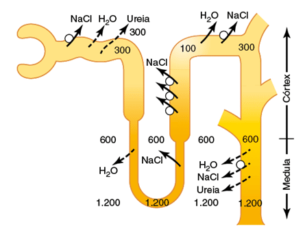
Até aqui, comentamos da importância da reabsorção dos solutos (sódio e cloreto) no ramo ascendente da alça na contribuição da formação de um interstício hiperosmótico.
Mas existe um outro soluto que contribui igualmente nessa formação: a UREIA.
Observe na imagem acima que, na porção distal do nefron, somente o ducto coletor medular é permeável à ureia.
Assim, na presença de altos níveis de ADH, a água já começa a ser reabsorvida no túbulo distal, deixando o fluído cada vez mais concentrado de ureia.
Quando finalmente o epitélio é permeável à ela, a ureia vai ser reabsorvida por difusão.
Existem transportadores de ureia que permitem isso (UT-A1, UT-A3).
Um ponto interessante é que esses transportadores são justamente ativados pelo ADH!
Aquele mesmo ADH que aumenta permeabilidade à água, também aumenta permeabilidade à ureia nessa porção do néfron (ducto coletor medular).
Isso faz sentido quando pensamos que, na necessidade de reabsorver mais água, mais solvente é reabsorvido, deixando o fluído mais e mais concentrado de ureia, facilitando a saída desse soluto por difusão tão logo o epitélio é permeável a ela.
Sendo essa ureia importante na contribuição do interstício hiperosmótico, que por sua vez é importante no processo de concentração de urina, faz sentido que o ADH regule a permeabilidade no nefron distal tanto de água, quanto de ureia.
Mas sabemos que ureia é um metabólito, que deve ser excretado… será que toda a ureia reabsorvida nessa porção terá como principal destino nossa circulação sistêmica??
Na verdade, parte dessa ureia reabsorvida participará de um processo chamado recirculação da ureia, como veremos adiante.
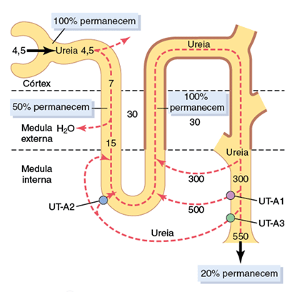
Observe na imagem acima que, como já descrito, ureia é reabsorvida na porção medular do ducto coletor (através dos transportadores UT-A1 e UT-A3).
Parte dessa ureia, que agora está no interstício, entra nas porções delgadas da alça de Henle.
Lembre-se que: se ureia está entrando no néfron, significa que ela está sendo secretada!
Ou seja: parte da ureia que é reabsorvida nos ductos coletores medulares é secretada nas porções delgadas da alça de Henle.
Essa ureia circula, passando pelos ductos coletores novamente.
É reabsorvida.
É secretada na alça.
Recircula….. etc.
Daí o nome recirculação da ureia.
O mais importante é você perceber que essa recirculação da ureia ajuda para a formação de medula renal hiperosmótica.
A troca por contracorrente nos vasos retos
Até aqui, vimos que quantidade significativa de água é reabsorvida de forma controlada na porção distal dos néfrons.
E que, além da presença de ADH, o interstício medular é fundamental para atrair essa água por osmose.
Aí você pode se questionar “mas essa água toda que é reabsorvida, fica ali parada no interstício“?
Isso inclusive dissolveria o interstício, e ele deixaria de ser hiperosmótico.
Vamos ver como tudo isso funciona:
Antes de mais nada, note na figura abaixo de qual ambiente estaremos falando.
Veja a relação entre a alça de Henle do néfron justamedular com os vasos retos (lembrando que vasos retos são os capilares peritubulares das alças de Henle dos nefrons justamedulares).
A disposição dos vasos retos em relação às alças de Henle que eles irrigam permite que as células dessa região tenham suprimento adequado de sangue, ao mesmo tempo que os solutos desse interstício não sejam dissipados.
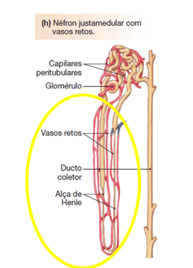
De fato, o arranjo anatômico da alça de Henle e dos vasos retos formam um sistema de troca em contracorrente, que mantém o interstício hiperosmótico, por impedir que solutos se dissipem, ou que a água reabsorvida dissolva o interstício.
Analise a figura a seguir. Identifique todos os componentes que ela traz, antes de seguir adiante na leitura.
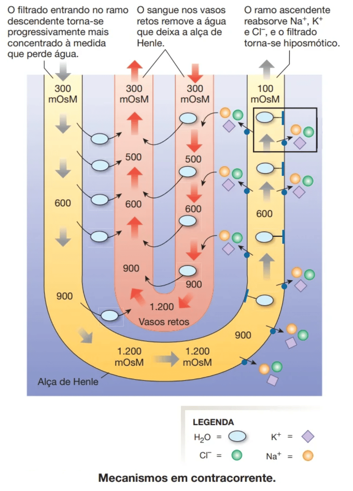
A imagem abaixo, agora do Guyton, mostra os mesmos mecanismos da imagem da Silverthorn, mas com um adicional: repare na difusão de solutos de dentro da porção ascendente do vaso reto conforme o sangue vai subindo, retornando ao córtex.
Isso ocorre porque o interstício vai se tornando menos concentrado conforme se aproxima do córtex.
A importância disso é que favorece a permanência de grande quantidade de solutos no interstício medular.
Obs: perceba que a disposição desse vaso reto é diferente do desenho da Silverthorn: se fosse incluída a alça de Henle, o ramo ascendente dela estaria à esquerda da figura, onde foi improvisado um desenho dela.
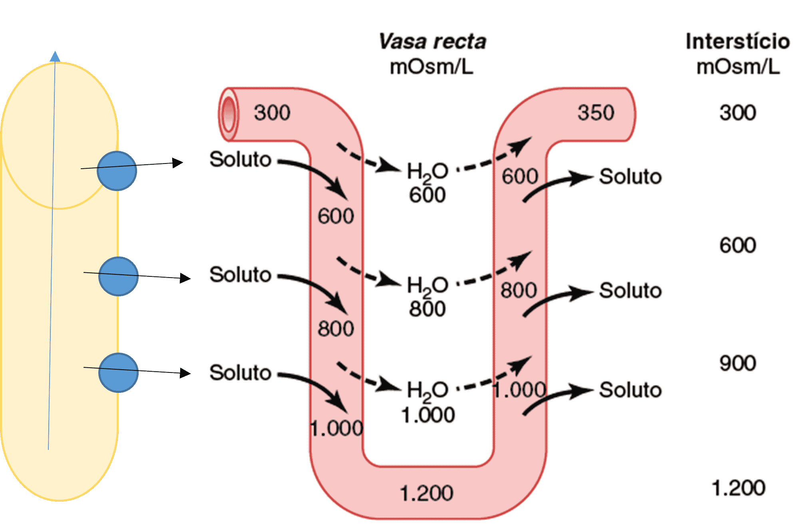
Troca por contracorrente nos vasa recta.
O plasma que flui no ramo descendente dos vasa recta fica mais hiperosmótico, em decorrência da difusão de água para fora do sangue e da difusão de solutos do líquido intersticial renal para o sangue.
No ramo ascendente dos vasa recta, os solutos se difundem de volta ao líquido intersticial, e a água retorna aos vasa recta também por difusão.
Sem o formato em U dos capilares dos vasa recta, haveria grande perda de solutos pela medula renal.
(Os valores numéricos estão em miliosmóis por litro.)